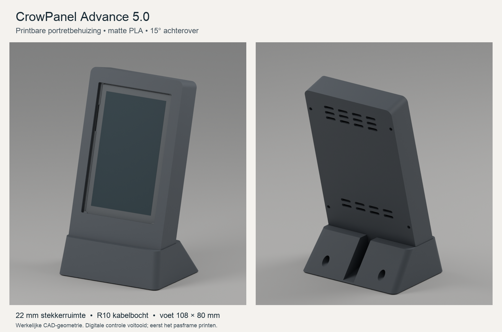

Bureaustandaard voor het ELECROW CrowPanel Advance 5.0 HMI ESP32-S3 IPS-touchdisplay (800 × 480), met de zwarte fabrieksplaten gemonteerd.
De voet meet 108 × 80 mm. Het scherm helt 15° achterover en de USB-C-kabel krijgt een rechte doorgang van 22 mm gevolgd door een bocht met straal 10 mm. Print eerst het pasframe om jouw scherm en kabel te controleren.
Digitaal gecontroleerd en gesliced voor de Bambu Lab P2S. De fysieke pasvorm is nog onbevestigd.
Naar de printbestanden